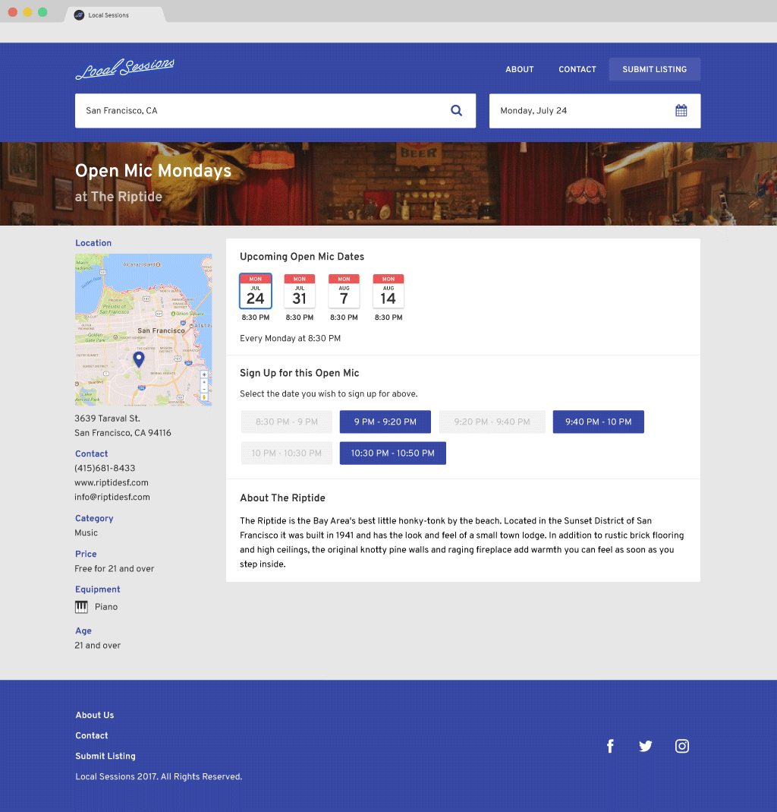
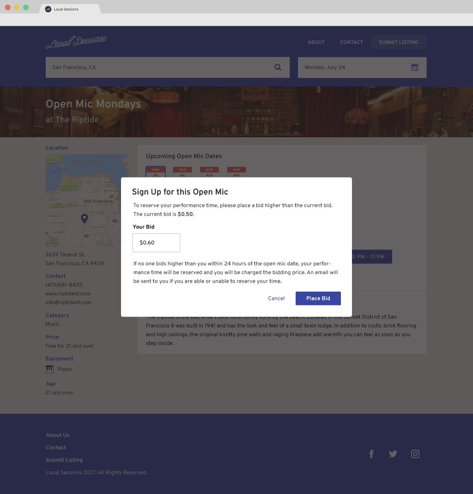
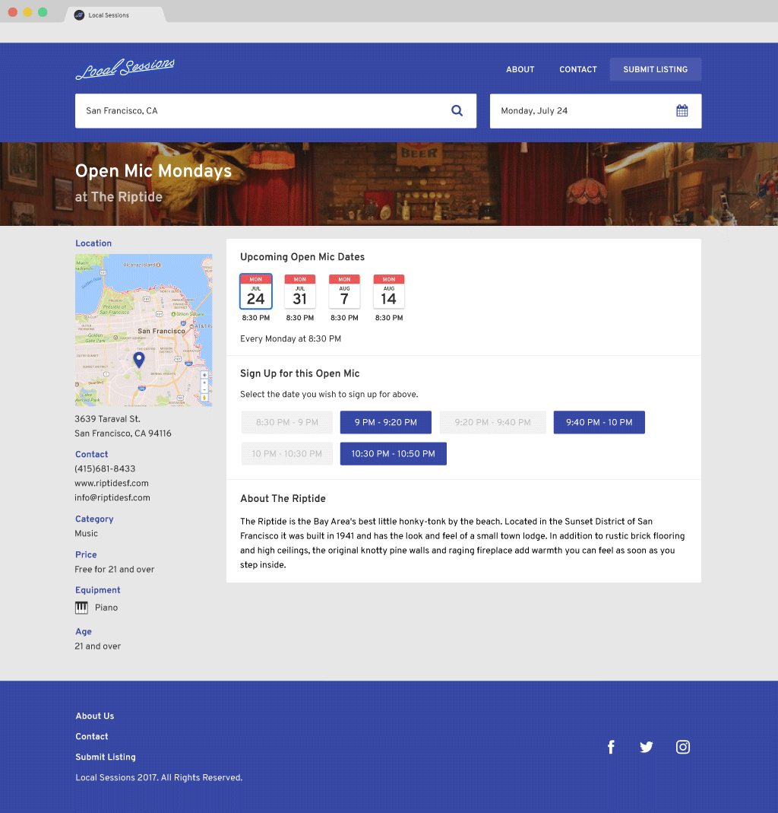
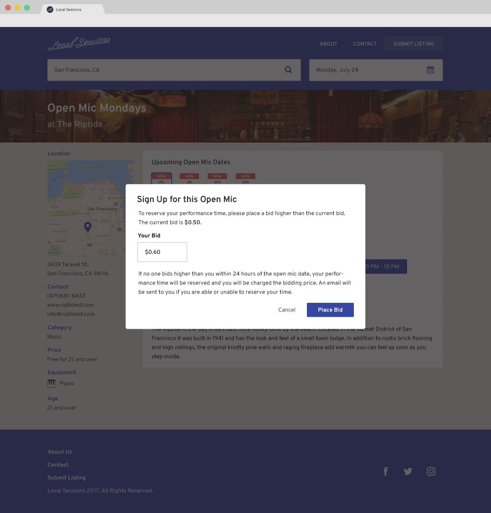

What is LocalSessions?
My friend, Grace, and I worked on on www.localsessions.io, a website that helps you discover open mics in your area.
The idea came out of the frustration from trying to find local open mics around me.
I’m sure other performers go through the same struggle of scavenging through Yelp, finding half-decent information in customer reviews, and then reluctantly relying on websites that look like they were made in the 70's (joerizzo.com/openmics/index.htm) for open mic events. Unfortunately, a lot of the time, this information is not even accurate or up-to-date.
Local Sessions will also provide a reservation system for artists to secure a spot during open mics. Most venues have performers play sign-up lottery for their spot during the open mic. This makes it very difficult to know when you have the floor, and even harder to tell your friends when to come watch!
If you’re someone who performs music, comedy, spoken word, or interpretive dance at open mics, we’d love to talk to you. We want to provide a service that helps artists perform at their best. If you’re someone who just loves going to local performances, we’d also love to talk to you!
 



Technologies